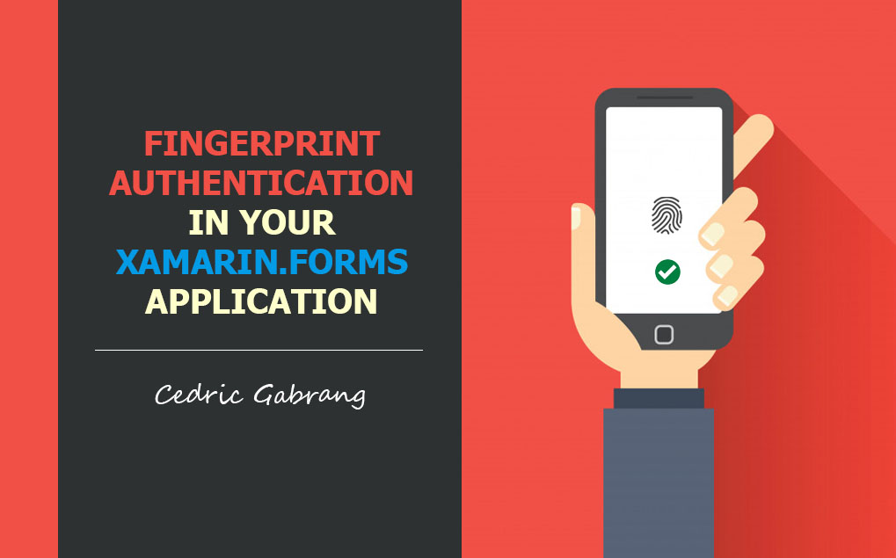
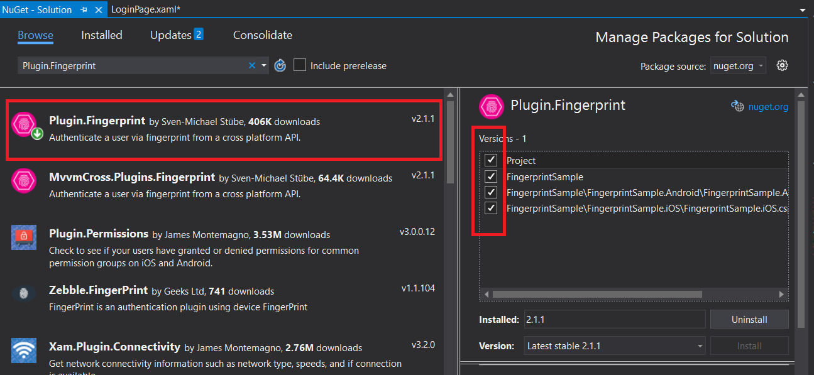
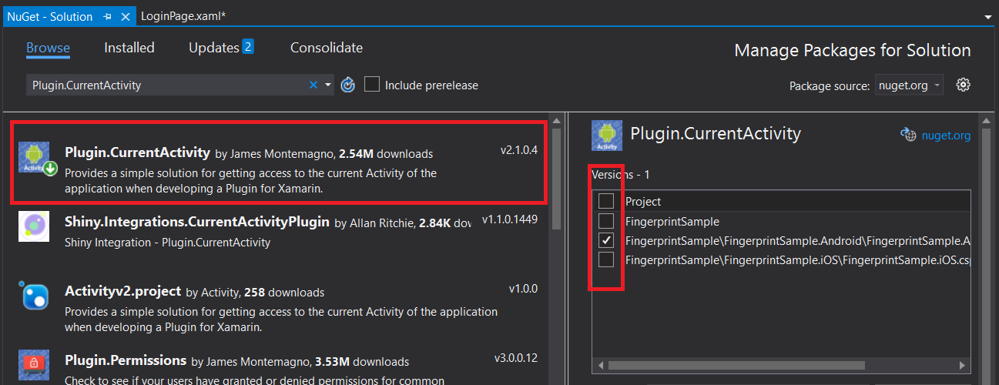
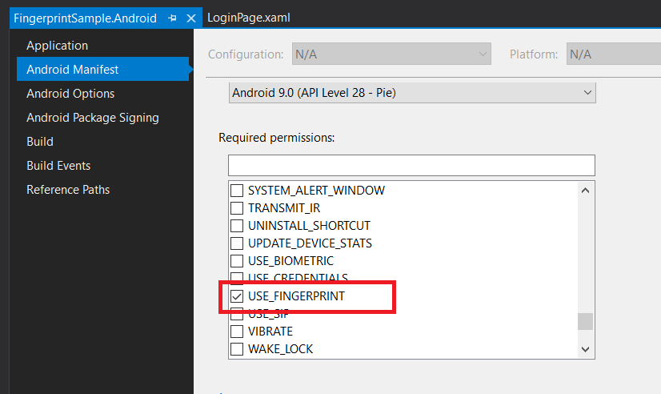
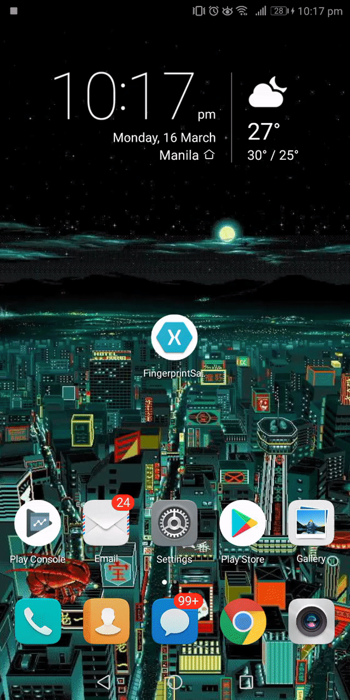

Integrating Fingerprint Authentication in Your Xamarin.Forms Application
by Cedric Gabrang • Mar 17th 2020

Fingerprint scanners on mobile devices give applications with an alternative to the conventional username and password process of user authentication. The use of fingerprints to authenticate a user makes it possible for an application to incorporate security that is less intrusive than a username and password.
Requirements
Fingerprint Authentication requires Android 6.0 (API level
23) or higher and a device with a fingerprint scanner.
A fingerprint must already be enrolled with the device for each user that is to be
authenticated. This involves setting up a screen lock that uses a password, PIN, swipe
pattern, or facial recognition.
Let's get started.
Now, we're going to use a Plugin.Fingerprint that was written by Sven-Michael Stübe to incorporate fingerprint scanning to your Xamarin.Forms application.
I have the XAML file created and open already named LoginPage.xaml, it is a login screen for accepting a username and a password but what we want to do is to give users a choice of using fingerprint authentication instead.

Install Packages
Let's start by adding the plug-in. Right-click on the solution then select Manage NuGet Packages for Solution. Search for Plugin.Fingerprint and install it in all of your projects.

The next plug-in that we're going to use here is James Montemagno's Plugin.CurrentActivity. Search for it then install it in your Android project only.

Android Setup
Go to your Android project and we have a few more things we need to for Android. First of all we have to go into the AndroidManifest and we need tell it that we're going to use fingerprint.

Next, open the MainActivity.cs and let's add an activity resolver for our CrossFingerPrint.
protected override void OnCreate(Bundle savedInstanceState)
{
TabLayoutResource = Resource.Layout.Tabbar;
ToolbarResource = Resource.Layout.Toolbar;
base.OnCreate(savedInstanceState);
CrossFingerprint.SetCurrentActivityResolver(() => this);
Xamarin.Essentials.Platform.Init(this, savedInstanceState);
global::Xamarin.Forms.Forms.Init(this, savedInstanceState);
LoadApplication(new App());
}Modify the LoginPage
Now that we have all of that successfully added, let's add our button and we'll call it btnFPLogin and we'll say the text Login using fingerprint.
<?xml version="1.0" encoding="utf-8" ?>
<ContentPage
x:Class="FingerprintSample.Views.LoginPage"
xmlns="http://xamarin.com/schemas/2014/forms"
xmlns:x="http://schemas.microsoft.com/winfx/2009/xaml"
xmlns:d="http://xamarin.com/schemas/2014/forms/design"
xmlns:mc="http://schemas.openxmlformats.org/markup-compatibility/2006"
mc:Ignorable="d">
<ContentPage.Content>
<StackLayout Padding="16" Spacing="0">
<Label Text="Username:" />
<Entry x:Name="entryUserName" Keyboard="Email" />
<Label Text="Password:" />
<Entry x:Name="entryPassword" IsPassword="True" />
<Button x:Name="btnLogin" Text="Login to Existing Account" />
<Button x:Name="btnFPLogin" Text="Login using Fingerprint" />
</StackLayout>
</ContentPage.Content>
</ContentPage>
Let's save it and go to our codebehind.
Now, the first thing we want to do here is to create an event method for our new button. We're going to be awaiting some calls in here so we're going to make that async.
private async void btnFPLogin_Clicked(object sender, EventArgs e)
{
}
Once we're done, we can now assign it as the button clicked event in our XAML page.
<Button x:Name="btnFPLogin" Clicked="btnFPLogin_Clicked" Text="Login using Fingerprint" />
Check Device's Fingerprint Availability
The first thing we want to do is to make sure to see if our
fingerprint is even available on the device and if it is we can try to authenticate.
Don't forget to reference first the Plugin.Fingerprint.
private async void btnFPLogin_Clicked(object sender, EventArgs e)
{
var result = await CrossFingerprint.Current.IsAvailableAsync();
if (result)
{
}
}
If the fingerprint is available then we're going to go ahead
and and do the rest of it where we're going to authenticate it. But first, let's have
AuthenticationRequestConfiguration for the fingerprint
dialog configuration.
private async void btnFPLogin_Clicked(object sender, EventArgs e)
{
var result = await CrossFingerprint.Current.IsAvailableAsync();
if (result)
{
var dialogConfig = new AuthenticationRequestConfiguration
("Login using fingerprint", "Confirm login with your fingerprint")
{
FallbackTitle = "Use Password",
AllowAlternativeAuthentication = true,
};
}
}
We're setting the
AllowAlternativeAuthentication to
true if we want it to fall back to using a pin.Then the
FallbackTitle here is we're just giving it a title like
"Use Password".
Now, if we are authenticated, we're going to set up the way to what we want once the fingerprint was accepted. For this instance, we're going to set up the app's MainPage, otherwise, we'll just display an alert to indicate failed authentication.
private async void btnFPLogin_Clicked(object sender, EventArgs e)
{
var result = await CrossFingerprint.Current.IsAvailableAsync();
if (result)
{
var dialogConfig = new AuthenticationRequestConfiguration
("Login using fingerprint", "Confirm login with your fingerprint")
{
FallbackTitle = "Use Password",
AllowAlternativeAuthentication = true,
};
var auth = await CrossFingerprint.Current.AuthenticateAsync(dialogConfig);
if (auth.Authenticated)
{
Device.BeginInvokeOnMainThread(() =>
{
Application.Current.MainPage = new MainPage();
});
}
else
{
await DisplayAlert("Authentication Failed", "Fingerprint authentication failed", "CLOSE");
}
}
}Let's run it!
